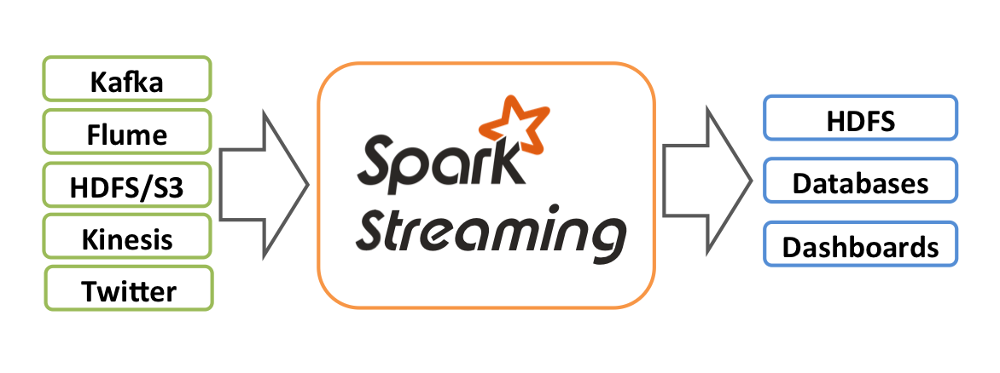

Spark Streaming类似于Apache Storm，用于流式数据的处理。根据其官方文档介绍，Spark Streaming有高吞吐量和容错能力强这两个特点。Spark Streaming支持的数据输入源很多，例如：Kafka、Flume、Twitter、ZeroMQ和简单的TCP套接字等等。数据输入后可以用Spark的高度抽象原语如：map、reduce、join、window等进行运算。而结果也能保存在很多地方，如HDFS，数据库等。另外Spark Streaming也能和MLlib（机器学习）以及Graphx完美融合。

其内部工作方式如下：
上图基本原理就是将输入数据流以时间片（秒级）为单位进行拆分，然后以类似批处理的方式处理每个时间片数据。Spark Streaming是将流式计算分解成一系列短小的批处理作业。这里的批处理引擎是Spark，也就是把Spark Streaming的输入数据按照batch size（如1秒）分成一段一段的数据（Discretized Stream），每一段数据都转换成Spark中的RDD（Resilient Distributed Dataset），然后将Spark Streaming中对DStream的Transformation操作变为针对Spark中对RDD的Transformation操作，将RDD经过操作变成中间结果保存在内存中。整个流式计算根据业务的需求可以对中间的结果进行叠加，或者存储到外部设备。
Spark Streaming是一种构建在Spark上的实时计算框架，它扩展了Spark处理大规模流式数据的能力。
Spark Streaming的优势在于：
能运行在100+结点上，并达到秒级延迟
使用基于内存的Spark作为执行引擎,具有高效和容错的特性
能集成Spark的批处理和交互查询
为实现复杂的算法提供和批处理类似的简单接口
在开始进行DStream操作之前，需要对Spark Streaming进行初始化生成StreamingContext。
//create a local StreamingContext with two working thread and batch interval of 1 second
//the master requires 2 core to prevent from a starvation scenario
val conf = new SparkConf().setAppName("sparkstreamdemo1").setMaster("local[*]")
val ssc = new StreamingContext(conf,Seconds(2))
目前Spark Streaming已支持了丰富的输入接口，大致分为两类：一类是磁盘输入，如以batch size作为时间间隔监控HDFS文件系统的某个目录，将目录内容的变化作为Spark Streaming的输入;另一类就是网络流的方式,目前支持Kafka、Flume、Kinesis、Twitter、ZeroMQ、MOTT和TCP socket.
//从hdfs读取数据
val lines = ssc.textFileStream("hdfs://master:9000/in")
//create a DStream that will connect hostname:port like hostname:9999
val lines=ssc.socketTextStream("localhost",9999)
def main(args: Array[String]) {
val zkQuorum="localhost:2181"
val groupId="1"
val topics="test"
val numThreads=2
val conf = new SparkConf().setAppName("sparkstreamkafkademo1").setMaster("local[*]")
val ssc = new StreamingContext(conf, Seconds(2))
ssc.checkpoint("checkpoint")
val topicMap = topics.split(" ").map((_, numThreads.toInt)).toMap
val messages = KafkaUtils.createStream(ssc,zkQuorum,groupId,topicMap)
val lines=messages.map(_._2)
val words = lines.flatMap(_.split(" "))
val wordCounts = words.map(x => (x, 1L)).reduceByKeyAndWindow(_ + _, _ - _, Minutes(10), Seconds(2), 2)
wordCounts.print()
ssc.start()
ssc.awaitTermination()
}
更详细的操作请点击spark-streaming&kafka
def main(args: Array[String]) {
val conf = new SparkConf().setAppName("sparkstreamflumedemo1").setMaster("local[*]")
val ssc = new StreamingContext(conf,Seconds(5))
val flumeStream=FlumeUtils.createStream(ssc,"master",9998)
//输出SparkFlumeEvent内容
flumeStream.map(e=>new String(e.event.getBody.array)).print(100)
ssc.start()
ssc.awaitTermination()
}
更详细的操作请点击spark-streaming&flume
其他数据源的操作还有待研究
与Spark RDD的操作极为类似，Spark Streaming也就是通过转换操作将一个或多个DStream转换成新的DStream。常用的操作包括map、filter、flatmap和join，以及需要进行shuffle操作的groupByKey/reduceByKey等.
val conf = new SparkConf().setAppName("sparkstreamdemo1").setMaster("local[*]")
val ssc = new StreamingContext(conf,Seconds(2))
val lines=ssc.socketTextStream("localhost",9999)
//reduce方法
lines.flatMap(_.split(" ")).map(_.toInt).reduce(_+_).foreachRDD(_.foreach(println))
//countByValue方法
lines.flatMap(_.split(" ")).countByValue().foreachRDD(_.foreach(println))
//join方法
val words1=lines.flatMap(_.split(" ")).map(word=>(word,1))
val words2=lines.flatMap(_.split(" ")).map(word=>(word,2))
words1.join(words2).print(20)
//cogroup方法
val words3=lines.flatMap(_.split(" ")).map(word=>(word,3))
val words4=lines.flatMap(_.split(" ")).map(word=>(word,4))
words3.cogroup(words4).print(20)
//reduceByKey方法
lines.flatMap(_.split(" ")).map(word=>(word,1)).reduceByKey(_+_).foreachRDD(_.foreach(println))
//updateStateByKey方法
ssc.checkpoint("sparkstreamdemo1")//设置检查点
//定义更新函数
val addFunc=(currentValues:Seq[Int],preValueState:Option[Int]) => {
//通过Spark内部的reduceByKey按key规约
val currentCount=currentValues.sum
//已累加的值
val preCount = preValueState.getOrElse(0)
Some(currentCount+preCount)
}
lines.flatMap(_.split(" ")).map(word=>(word,1)).updateStateByKey[Int](addFunc).foreachRDD(_.foreach(println))
另外，Spark Streaming有特定的窗口操作，窗口操作涉及两个参数：一个是滑动窗口的宽度（Window Duration）；另一个是窗口滑动的频率（Slide Duration），这两个参数必须是batch size的倍数。
//window方法
lines.flatMap(_.split(" ")).window(Seconds(30),Seconds(10)).print
//countByWindow方法
lines.flatMap(_.split(" ")).countByWindow(Seconds(30),Seconds(10)).print
//reduceByKeyAndWindow方法
lines.flatMap(_.split(" ")).map(w=>(w,1)).reduceByKeyAndWindow((a:Int,b:Int) => a+b,Seconds(30),Seconds(10))
//countByValueAndWindow方法
lines.flatMap(_.split(" ")).countByValueAndWindow(Seconds(30),Seconds(10)).print
对于输出操作，Spark提供了将数据打印到屏幕及输入到文件中。
//将DStream的内容为序列化对象并保存为SequenceFile文件
lines.saveAsObjectFiles("wordcount")
//保存此DStream的内容作为文本文件
lines.saveAsTextFiles("wordcount")
更多Spark Streaming的操作查看DStream文档
1.电子商务：需要处理并且挖掘用户行为产生的数据，产生推荐，从而带来更多的流量和收益。最理想的推荐就是根据兴趣推荐给用户本来不需要的东西！而每天处理海量的用户数据，需要一个低延时高可靠的实时流式分布式计算系统。
2.新闻聚合:新闻时效性非常重要，如果在一个重大事情发生后能够实时的推荐给用户，那么肯定要依赖流计算。
3.社交网站：大家每天都会区社交网站是为了看看现在发生了什么，周围认在做什么。流式计算可以把用户关注的热点聚合，实时反馈给用户，从而达到一个圈子的聚合效果。
4.交通监管部门：每个城市的交通监管部门每天都要产生海量的视频数据，这些视频数据也是以流的形式源源不断的输系统中。实时流式计算系统需要以最快的速度来处理这些数据。
5.数据挖掘和机器学习：它们实际上是互联网公司内部使用的系统，主要为线上服务提供数据支撑。它们可以说是互联网公司的最核心的平台之一。系统的效率是挖掘的关键，理想条件下就是每天产生的海量数据都能得到有效处理，对于原来的数据进行全量更新。
6.大型集群的监控：自动化运维很重要，集群监控的实时预警机制也非常重要，而流式系统对于日志的实时处理，往往是监控系统的关键。